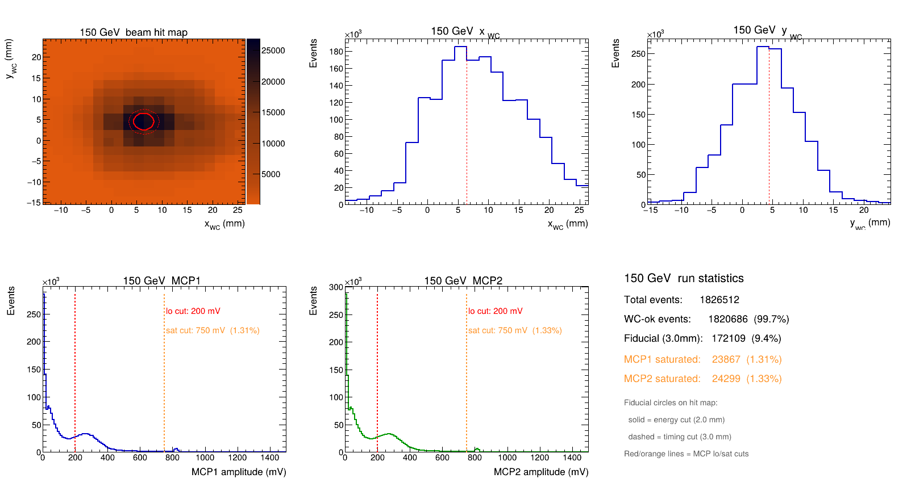
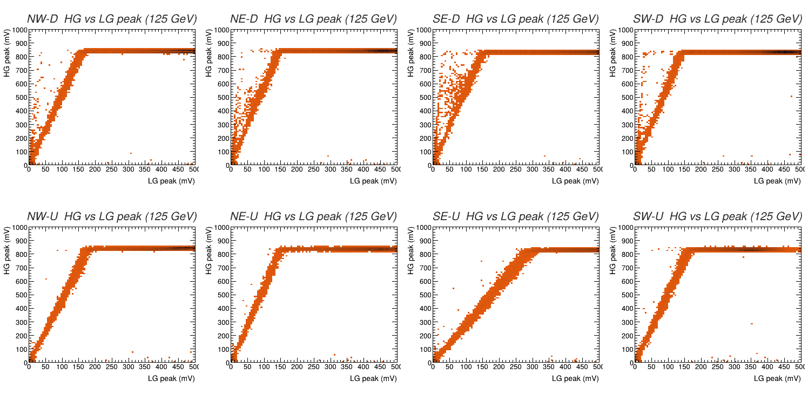
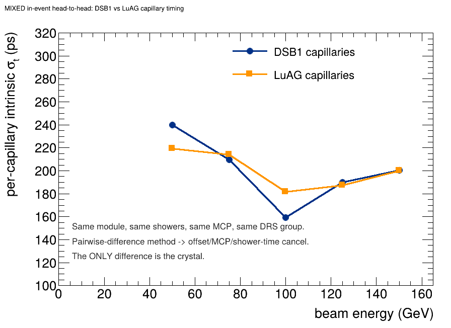
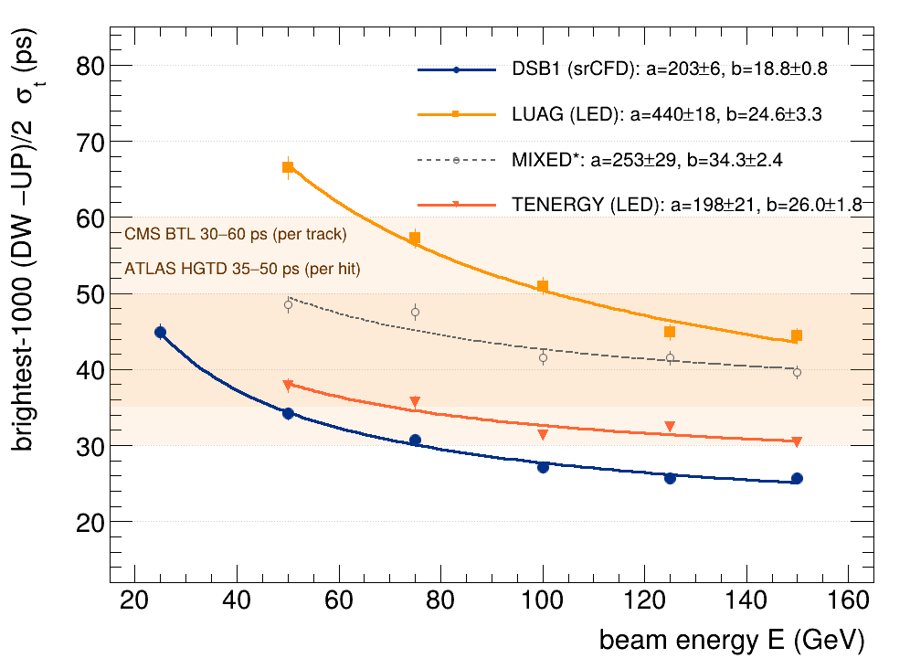
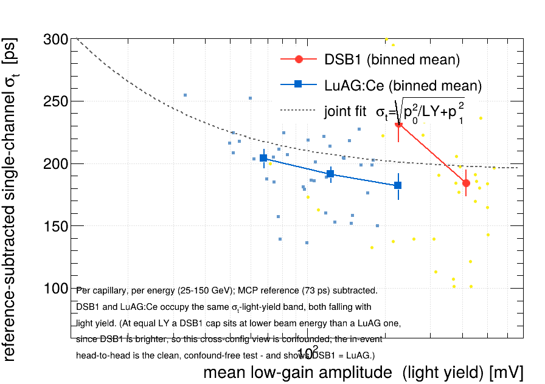

1Introduction
At the High-Luminosity LHC, up to two hundred proton–proton collisions will overlap in a single bunch crossing. Resolving them by space alone is no longer enough; reconstruction now needs time, with each shower stamped to a few tens of picoseconds so that particles can be assigned to the correct vertex. A calorimeter that measures energy and time at once — a "4D" calorimeter — is one of the central instrumentation goals of the field, and the CMS Phase-2 timing layers set a benchmark near 30 ps for minimum-ionizing and electromagnetic objects.
The RADiCAL programme pursues this with a radiation-hard, very-high-granularity shashlik design: thin tungsten absorber plates interleaved with LYSO:Ce scintillator, threaded by fast scintillating capillaries that sample the shower at its maximum and pipe the light to silicon photomultipliers (SiPMs). The capillary sits where the shower is brightest and is small and fast, so its timing is limited by the light it collects rather than by the bulk calorimeter. This report is a complete, narrative account of what the May 2023 CERN-SPS run of a RADiCAL prototype actually delivered: the headline timing resolution and how it was extracted, the energy response, and a set of supporting studies — the dual-gain readout, the role of deliberate saturation, and a comparison of four capillary scintillator materials — that together explain why the detector times as well as it does.
Two ideas carry the timing measurement and recur throughout. The first is a reference detector — an MCP — that provides a common start time. The second is the established RADiCAL estimator — the published "BestMinus" method — in which the four corner capillaries are read at their downstream ("DW") and upstream ("UP") ends, and a simple half-difference of the two cancels every common timing nuisance — the MCP reference, the sampler's group-to-group jitter, and its cell-width error — exposing the intrinsic detector resolution. Our contribution is not this estimator but the rigour layered onto it: a saturation-recovered constant-fraction discriminator (srCFD) that times clipped pulses on their true steep edge, a data-driven timebase study, and a deterministic brightest-1000 selection quoted alongside its full-fiducial companion. We build the result from the raw waveforms upward, validating each link before relying on it, and — because the selection is fixed before any fit — nothing in the headline is an artefact of selecting the data on itself.
It follows the measurement's own logic: the apparatus (§2), the data and event selection (§3), the timing method (§4), then the two physics results — timing (§5) and energy (§6). Three "why it works" studies follow — the dual-gain readout (§7), capillary materials (§8), and the full systematic and cross-check budget (§9) — before the discussion (§10). Readers wanting the interactive figures, per-energy appendices, and the underlying code can consult the six-layer report.
2The apparatus
The detector under test is a RADiCAL W/LYSO shashlik electromagnetic module — 29 LYSO:Ce scintillator plates interleaved with 28 tungsten absorber plates, a compact, radiation-hard sampling calorimeter that is 25 X₀ deep (135 mm). Threaded through it are four fast scintillating capillaries at the transverse corners (NW, NE, SE, SW), each holding a wavelength-shifting filament positioned at shower maximum and read out by a SiPM at both ends — the downstream ("DW") and upstream ("UP") readouts — which together give the eight timing channels the corner estimator combines. The active transverse footprint, reconstructed from the beam data, is a clean 15.5 × 15.5 mm square centred at (6.58, 4.66) mm in wire-chamber coordinates. At only ~1 Molière radius wide (RM = 13.7 mm) the single module contains the shower longitudinally but leaks transversely — full containment would need a 3×3 array — so it is a timing demonstrator, not a stand-alone full-containment calorimeter.
Dual-gain readout
Each capillary's scintillation light is recorded through two parallel electronics chains: a high-gain (HG) channel with a fast, sharp shape, optimised for timing, and a low-gain (LG) channel with a slower shape that stays proportional to the deposited energy. Sixteen waveforms — eight HG plus eight LG — are therefore digitised per event. The two peak amplitudes from a given capillary are linearly related, since both track the same light, but their pulse shapes differ by construction: the HG edge is deliberately steep (and, at high energy, clipped) for timing, while the LG pulse is kept linear and unsaturated for calorimetry. This division of labour is visible directly in the average pulse shapes.

Reference, tracking, and digitisation
A micro-channel-plate (MCP) detector upstream provides the start time. In this readout a single MCP is passively split into the two DT5742 readout groups, appearing as "MCP1" (group 0) and "MCP2" (group 1) with unit amplitude correlation; seven capillaries are referenced to MCP1 and the lone group-1 capillary (SW-Up) to MCP2. Beam tracking uses a delay-line wire chamber, giving the transverse impact point as x = (7/36 mm·ns⁻¹)·(tR − tL); its single-track resolution is ≈3.6 mm. A lead-glass block behind the module tags shower leakage and hadronic punch-through, and a 1 × 1 cm scintillator provides a clean single-particle trigger. All channels are sampled by a CAEN DT5742 (DRS4-based switched-capacitor digitiser) at 5 GS/s — nominally 0.2 ns per cell — across 25, 50, 75, 100, 125 and 150 GeV electron beams, for 6.5 million recorded events.


3Data and event selection
A clean timing event is required to (a) have a valid wire-chamber track; (b) land inside a transverse fiducial region around the module centre (radius 2.5 mm for E ≤ 100 GeV, 3.0 mm for E ≥ 125 GeV); (c) carry a well-formed MCP reference pulse (200 < AMCP < 750 mV, the lower bound rejecting noise and the upper one rejecting DRS4-saturated references); and (d) be a contained electromagnetic shower, defined by ΣPbGlass < 30% × ΣLG. The fiducial radii themselves were chosen by an out-of-sample scan rather than by eye, so that the selection does not secretly tune on the resolution it is meant to measure.
With these cuts the beam sample is clean: showers are 95–97% contained across all energies, and hadronic punch-through — electrons' principal contaminant in this beamline — is held to a few percent, rising to 6.2% only at 150 GeV. The wire-chamber illumination sits comfortably inside the fiducial circles.


The transverse maps that locate the module also surface the apparatus itself. Colouring each beam position by the mean signal turns the beam into an X-ray of the setup: the active calorimeter appears as a sharp square, and two bright rings appear where beam particles pre-shower in the metal of the MCP cable connectors. (These same maps are the subject of the hands-on Data Lab.)

4The timing method
Three choices define the measurement: how each pulse is time-stamped, how the eight stamps are combined, and which events enter the headline.
4.1 Time-stamping: saturation-recovered constant fraction (srCFD)
Each capillary is time-stamped by a constant-fraction discriminator (CFD): the crossing time of the rising edge at a fixed fraction of the pulse peak. The high-gain timing pulse, however, is run so hot that big showers clip flat at ~820 mV — above ~75 GeV most pulses are saturated and the true peak is lost, so a fraction of the clipped peak slides down onto the shallow, timing-fragile foot. The production estimator recovers it: for each event the true unclipped peak is predicted from the linear low-gain copy (§7.1), and the CFD fraction is placed on the true peak, so the threshold lands high on the steep leading edge — roughly 3.7× steeper than the clipped foot. We call this srCFD (saturation-recovered CFD). For the dim builds, where clipping is rare and small pulses make a fractional threshold noisy, a fixed-level discriminator (LED) is used instead — the per-regime rule. The residual single-channel jitter is not slope, noise, or amplitude walk but leading-edge shape jitter — the shot-to-shot wander of the early edge, which grows the higher one samples; timing low on the steep recovered edge samples the most reproducible point available.


4.2 Combination: the MCP-free corner estimator
The intrinsic resolution of a single capillary referenced to the MCP is limited not by the capillary but by the reference: the two DT5742 groups jitter against each other by σ(MCP1−MCP2)/√2 ≈ 73 ps, flat with energy. This inter-group sampler jitter, together with the DRS4 cell-width error, dominates any MCP-referenced single channel. The key insight is that these nuisances are common, and a difference of co-referenced channels removes them. Writing DW for the mean of the four shower-max (Down) corner times and UP for the four upstream (Up) times, the estimator
cancels the per-group MCP reference, the inter-group jitter, and the cell-width error algebraically — three of the four corners sit entirely within group 0 and are exactly reference-free, leaving only a sub-dominant residual on the single group-1 corner. The result sits comfortably below the 73 ps single-reference floor, which is only possible because the reference has been differenced away.

4.3 Selection: deterministic brightest-1000
The headline at each beam energy is read from a deterministic brightest-1000 selection — the 1000 largest-ΣLG fiducial events, fixed before any fit. Because the selection is a rank cut set in advance rather than a bin tuned to the resolution it measures, there is no optimization bias by construction: no held-out cross-validation is needed to defend it, and the earlier best-contained-bin machinery — whose tightest bins could overfit, and which motivated the radius scan (§3) — is retired. The width is a robust Gaussian-core σ with an in-event down/up consistency veto, stable at the fixed sample size. Crucially, the brightest-1000 headline is always quoted beside its full-fiducial companion (≈50 ps at 150 GeV): the selection is named, and the two together bracket the detector from its best-measured showers to its whole in-fiducial population.

5Timing resolution
The central result of the experiment: the corner estimator reaches 25.7 ± 0.6 ps at 150 GeV for the brightest-1000 showers, with ≈50 ps over the full fiducial sample at the same energy, and follows a clean stochastic-plus-floor curve down to 25 GeV.
| Beam energy | σt brightest-1000 (ps) | full fiducial (ps) | published curve (ps) |
|---|---|---|---|
| 25 GeV | 45.0 | 64.6 | 54.1 |
| 50 GeV | 34.2 | 53.7 | 40.2 |
| 75 GeV | 30.7 | 50.0 | 34.4 |
| 100 GeV | 27.1 | 50.1 | 31.0 |
| 125 GeV | 25.7 | 49.8 | 28.8 |
| 150 GeV | 25.7 ± 0.6 | 50.5 | 27.3 |
The energy dependence of the brightest-1000 curve is described by a stochastic term over a constant floor,
and the fitted floor of 18.8 ± 0.8 ps confirms the published 17.5 ps constant term measured on the same detector and beam — an independent estimator reaching the same floor, not a revision of it. The floor is an extrapolation beyond the 150 GeV data edge (our lowest measured point is 25.7 ps); its plausible physical origin is longitudinal shower-depth fluctuation, discussed in §10.

Behind the combined number, the individual capillaries span a wide range of quality. The per-channel, per-energy resolution map shows the best Up channels reaching ≈160 ps and the weakest cells exceeding 300 ps — variation that the corner combination averages over but that also points (§9) to two channels worth investigating.

6Energy resolution
Energy is measured on the linear, unsaturated low-gain chain, whose amplitude stays proportional to beam energy across the full 25–150 GeV range with no sign of saturation. This is a shower-maximum sampled energy — ESM, from ≈3 LYSO tiles at shower max ≈ 1 Molière radius — and its resolution improves with energy as expected, reaching σESM/E = 13.9% at 150 GeV.
| Beam energy | 25 | 50 | 75 | 100 | 125 | 150 GeV |
|---|---|---|---|---|---|---|
| σE/E (%) | 21.4 | 16.8 | 15.2 | 14.3 | 14.3 | 13.9 |
The large constant term is not a defect but an expectation, and it is not longitudinal leakage — the module is 25 X₀ deep. Rather, this is a localized shower-max measurement: the capillaries sample only the ≈3 LYSO tiles around shower maximum, in a module just ~1 Molière radius wide, so the stochastic and constant terms reflect that restricted sampling and the transverse leakage, not a full-module energy sum. (This matches the published paper, which quotes this same quantity as the shower-max energy resolution, explicitly distinct from a full-module measurement.) The point of the prototype is timing; the low-gain chain provides the clean, localized energy estimate the brightest-ΣLG timing selection relies on.


7The dual-gain readout, saturation, and its recovery
Why split each capillary into two chains, and why drive the high-gain one so hard that it clips? The answers, tested directly on the waveforms, illuminate the timing physics.
7.1 A clean dual-gain transfer curve
For contained showers, the high-gain and low-gain peak amplitudes of a capillary trace a tight straight line — they are two views of the same scintillation light. (An apparent ~10–20% scatter seen earlier was an event-selection artefact: non-contained events read electronic noise into the channel; requiring containment collapses the cloud onto the line.) This linearity is the basis for the saturation studies that follow.

7.2 Why SiPM gain helps timing but amplifier gain cannot
It is worth separating two notions of "gain." Timing precision scales as σt ≈ (noise)/(slew rate). A linear amplifier multiplies the signal slew and the noise by the same factor, so the ratio — and the timing — is unchanged: you cannot amplify your way to a sharper time. What genuinely sharpens the edge relative to the noise floor is more detected light — more photoelectrons — which is what raising the SiPM bias (photon detection efficiency), within its optimum, actually buys. This is the design rationale for placing the capillary at shower-max and reading it with high light yield.
7.3 Saturation recovery is the method: srCFD
The high-gain channel is run so hot that big pulses clip the rail — above ~75 GeV most pulses are saturated. A naïve constant fraction of the clipped peak would slide down onto the shallow foot of the pulse, exactly where timing is most fragile. The production estimator fixes this at the source: reconstruct each saturated pulse's true, un-clipped peak from its low-gain partner (the linear transfer of §7.1) and place the CFD fraction on that true peak, so the threshold lands high on the steep recovered edge — roughly 3.7× steeper than the clipped foot. This is srCFD, and it is what the headline runs on. It is the clean resolution of the design tension: the high gain is deliberately driven into saturation to sharpen the timing edge, and the low-gain copy is what lets us recover that edge when it clips.
srCFD times a fixed fraction of the low-gain-predicted true peak, so a clipped pulse is stamped on its steep leading edge rather than its foot. The steeper edge (≈3.7× the clipped-foot slope) means the same voltage noise buys far less time jitter — the mechanism behind the headline. Deliberate saturation is not a cost to be tolerated; it is a design choice the dual-gain readout is built to recover.
8Capillary materials: light yield, not WLS species
The May 2023 run took four capillary builds — DSB1, LuAG:Ce, a 2×DSB1 + 2×LuAG:Ce mix, and a 3×DSB1 + 1×"Energy" build — all sharing one W/LYSO:Ce module and one readout geometry, so a single analysis serves them all. The LYSO:Ce scintillator and tungsten absorber are common to every build; the variable is the wavelength-shifting (WLS) capillary — organic DSB1 versus ceramic LuAG:Ce. The question is whether the WLS species drives timing. It does not: light yield, not WLS species, governs the timing.
8.1 Dataset and the config-agnostic reduction
The four builds were taken as separate run groups but share one 8+8 readout, so a single analysis geometry
serves all of them. A config-agnostic reduction (reduceRaw.C) stores, for all 36 digitiser
slots, the (peak, CFD time, charge) plus the wire-chamber track and both MCP references — no per-build
channel map is needed — shrinking each ~2 GB raw run to ≈12 MB (a 160× reduction) for the cross-build
study.
| Build | Total runs | Analyzed | Energies |
|---|---|---|---|
| DSB1 | 330 | 252 | 25–150 GeV |
| LuAG | 485 | 212 | 50–150 GeV |
| 2×DSB1 + 2×LuAG (mixed) | 252 | 190 | 50–150 GeV |
| 3×DSB1 + 1×Energy (TENERGY) | 210 | 162 | 50–150 GeV |
8.2 The in-event same-shower test
The cleanest test reads both WLS capillaries in the same showers: in the mixed module, the pairwise difference of any two same-group capillary times cancels the event time, the reference, and the shared shower time, leaving each capillary's intrinsic jitter. By this same-shower comparison, the DSB1 and LuAG:Ce wavelength-shifting capillaries give timing widths agreeing at the 10–20% level (σDSB1/σLuAG = 1.04 ± 0.05, srCFD) — near-parity that, set against the more-than-2× cross-build stochastic-term ratio (a rises from 203 ± 6 to 440 ± 18 ps·√GeV), disfavors intrinsic WLS re-emission kinetics as the dominant driver of the cross-build timing difference, within this geometry and at these light levels.


Reading the same showers, DSB1 ≈ LuAG:Ce per capillary (within ~10–20%). What separates the builds is light yield, not WLS chemistry: the corner estimator is limited by its dimmest capillary, so the all-bright DSB1 build times best, and the stochastic term more than doubles (203 → 440 ps·√GeV) as the collected light falls. This validates the programme's strategy — prove a bright WLS times well, then show a radiation-hard one can be made bright enough. The reason to test materials is radiation tolerance; the data say a rad-hard WLS that is bright enough will time just as well.

8.3 Production resolution across all four builds
The production chain — brightest-1000 (DW−UP)/2 with the per-regime estimator (srCFD for the high-light builds, LED for the dim ones) — read across all four builds gives the ordering of Figure 12b. The per-build headline and its fitted floor are collected below.
| Build (WLS capillary) | source | σt@150 (ps) | a (ps·√GeV) | floor b (ps) | syst (ps) |
|---|---|---|---|---|---|
| DSB1 (organic DSB1) | srCFD | 25.7 ± 0.6 | 203 ± 6 | 18.8 ± 0.8 | 1.0 |
| TENERGY (DSB1, E-type geom.) | LED | 30.3 | 198 ± 21 | 26.0 ± 1.8 | 1.1 |
| MIXED (DSB1 + LuAG:Ce) | srCFD | 39.6* | 253 ± 29 | 34.3 ± 2.4 | 0.9 |
| LuAG:Ce (ceramic) | LED | 44.4 | 440 ± 18 | 24.6 ± 3.3 | 1.9 |
DSB1 — uniformly the brightest capillaries — times best at every energy, and the stochastic term a more than doubles (203 ± 6 → 440 ± 18 ps·√GeV, a factor of 2.2) from DSB1 to LuAG:Ce as the collected light falls. The fitted floors of the LYSO builds lie in the 19–26 ps range and are mutually consistent once the TENERGY capillary-count penalty (√(4/3), from three timing corners rather than four) and the LuAG:Ce extrapolation uncertainty are accounted for — the floor tracks the shower, not the WLS species.
The MIXED module holds two WLS species in one module, so a single module-wide σ (39.6 ps) is ill-posed and quoted for reference only; the meaningful measurement is the same-shower DSB1/LuAG:Ce ratio of Fig. 12a (1.04 ± 0.05). The TENERGY build carries an E-type (full-length WLS) energy capillary at its NW corner rather than a fourth timing corner — so it times on three DSB1 corners, and its module-wide 30.3 ps and floor 26.0 ± 1.8 ps carry the √(4/3) capillary-count penalty relative to a four-corner build. Its E-type cap is a preview of the full-length energy-measurement direction, not a fourth timing point.
The energy resolution, measured on the summed low-gain response, is flat and essentially build-independent:
| E (GeV) | DSB1 | LuAG | mixed | TENERGY |
|---|---|---|---|---|
| 25 | 19.5 | — | — | — |
| 50 | 17.5 | 14.0 | 15.2 | 14.9 |
| 75 | 16.6 | 13.5 | 14.6 | 14.3 |
| 100 | 16.7 | 13.6 | 14.7 | 14.4 |
| 125 | 16.8 | 14.0 | 14.7 | 14.2 |
| 150 | 16.2 | 14.5 | 14.8 | 13.5 |
Across all four builds σESM/E sits in the ~14–17% band with no real trend — the localized shower-max measurement's constant term dominates regardless of WLS species (§6). DSB1 reads a little higher here (~16–17%) only because this is the simple all-fiducial estimate; its polished pipeline gives 13.9% at 150 GeV (§6, Table 2).
8.4 What this picture rests on — and its present scope
The same picture explains the high-gain/low-gain timing comparison: the clean, unsaturated low-gain "perfect pulses" actually time roughly twice worse than the saturated high-gain ones, because the low-gain shape is slow. Slew — a fast edge — beats pulse cleanliness. Light yield delivers slew; that is the whole design in one sentence.
The per-build production timing (Table 4, Fig. 12) covers all four configurations. The dual-gain linearity and saturation-recovery (srCFD) studies of §7, and the HG-vs-LG timing control, were demonstrated in detail on DSB1 — the build whose raw waveforms are reduced locally for the LG-predicted threshold recomputation — and the production srCFD/LED per-regime chain is applied to every build. We expect the §7 conclusions to carry over per-build, since the timing physics is set by light yield and slew, not by WLS species.
9Systematics and cross-checks
The headline is built on a chain of checks, each verifying a link before it is relied upon. The total systematic uncertainty on the amplitude-weighted channel combination is 2.7 ps at 150 GeV, the quadrature sum of four cut variations (fiducial radius, MCP amplitude window, containment threshold, and CFD fraction), each only a few picoseconds. The MCP-window term does not even apply to the MCP-free corner headline, so its systematic is smaller still.


9.1 The DRS4 timebase
The switched-capacitor sampler has a ~68 ps common-mode cell-width error, applied at nominal 0.2 ns/cell without per-cell calibration. This is the kind of effect that quietly limits precision timing — but here it is cancelled by construction: the corner difference and the MCP1−MCP2 difference both remove it. The proof is direct: applying a data-driven stop-cell correction improves the amplitude-weighted combination from 120.7 to 99.5 ps, yet leaves the corner estimator unchanged, because the corner had already differenced the error away. The stop cell rotates uniformly under the asynchronous trigger, so the correction is well-posed for the combinations that do need it.

9.2 Two channels, and the ideal-uniform projection
Two capillaries underperform. NW-Up is consistently the weakest — low light yield, a compressed pulse, and a slight drift to worse resolution at high energy — a pattern that suggests a hardware issue (noisy electronics or reduced light) worth investigating; dropping it improves the seven-channel combination by ≈7 ps. SW-Up is the lone group-1 capillary, carrying the residual ≈70 ps reference floor and a weak relative gain. Both are nonetheless kept, because in the corner estimator removing them degrades the result. Projecting what the headline would be if these two followed the well-behaved trend of their peers gives a modest, honest estimate of the headroom: a ≈2 ps gain at 150 GeV that vanishes below 75 GeV. The measured 25.7 ps stands; the projection only quantifies what a uniform detector would yield.

9.3 Other cross-checks
- MCP reference. The 73 ps "MCP" jitter is inter-group sampler jitter, not the MCP itself — a single MCP split into two groups gives unit amplitude correlation and clean Gaussian time-difference distributions with no tails.
- Wire chamber. Single-track resolution σx ≈ 3.7 mm, σy ≈ 3.6 mm (≈3.3 mm with sub-sample CFD), energy-independent — adequate for the ~3.5 mm position bins used.
- Module centre. Located independently by the high-gain (6.58, 4.66 mm) and low-gain (6.61, 4.70 mm) sums to better than 0.05 mm, and stable with energy to ±0.15 mm.
- Tails. ≈2.6% of events lie beyond 2.5σ (vs 1.2% for a pure Gaussian), raising the trimmed RMS by only ~2 ps; just 0.13% lie beyond 250 ps — rare mis-reconstruction a real experiment removes with a one-line cut.
- Connector rings. The bright rings are pre-showering in connector metal (≈1 X₀), which conserves energy; a veto was tested and worsened the headline, so none is applied.
10Discussion and outlook
The prototype reaches 25.7 ± 0.6 ps at 150 GeV for the brightest-1000 showers (≈50 ps over the full fiducial sample), approaching the ≈30 ps benchmark of the CMS Phase-2 timing layers — with an estimator that needs no precise external clock, since the corner difference manufactures its own reference cancellation. The energy dependence, σt = 203/√E ⊕ 18.8 ps, shows that above ~100 GeV the resolution approaches a constant floor rather than being set by photostatistics.
That floor is the most important caveat, and the most encouraging one. The fitted constant term of 18.8 ± 0.8 ps confirms the published 17.5 ps measured on the same detector and beam — an independent estimator reaching the same floor, not a revision of it. It is an extrapolation beyond the 150 GeV data edge (our lowest measured point is 25.7 ps), and its plausible physical origin is not the electronics but the shower: the longitudinal depth of the shower maximum fluctuates event to event, and the upstream–downstream half-difference the estimator measures moves with it — the mean asymmetry drifts by −33.6 ± 2.9 ps per e-fold in beam energy, consistent in sign and scale with the expected logarithmic migration of shower maximum. The floor is a property of the shower development this geometry samples, not an artefact of the DAQ.
The headline is the brightest-1000 selection — the best-measured showers — and is always quoted beside its full-fiducial companion (≈50 ps at 150 GeV) so the selection is explicit; the two bracket the detector's range. The asymptotic floor is an extrapolation neither this analysis nor the published one measured directly, since no beam exceeded 150 GeV. The energy resolution is a localized shower-max measurement (ESM, ≈3 LYSO tiles, ~1 Molière radius wide), not a full-module sum, and should not be read as the concept's calorimetric limit. The self-referenced (DW−UP)/2 differential is not a clock-referenced time-of-arrival — the absolute, MCP-referenced number is the ≈50 ps class.
The supporting studies tie the picture together. The capillary WLS species does not set the timing — light yield does, validating the use of radiation-hard WLS materials provided they are bright enough. The dual-gain readout cleanly separates the timing and energy jobs, and srCFD recovers the deliberately saturated high-gain edge from the low-gain copy. The natural next steps are concrete: apply the per-cell timebase calibration to the channel-combination methods, investigate and recover the two weak capillaries, and push to higher energy to measure the floor the fits currently only project.
11Conclusions
A compact W/LYSO:Ce shashlik prototype with dual-gain scintillating-capillary readout, exposed to 25–150 GeV electrons at the CERN SPS, achieves a timing resolution of 25.7 ± 0.6 ps at 150 GeV for the brightest-1000 showers (≈50 ps over the full fiducial sample) using an MCP-free corner estimator, saturation-recovered CFD time-stamping, and a deterministic brightest-1000 selection. The measurement is reproducible — every number is harvested programmatically from the analysis outputs — and the fitted floor of 18.8 ± 0.8 ps confirms the published 17.5 ps constant term, with a plausible shower-depth origin. The detector's performance is governed by light yield, not WLS species, and the deliberate high-gain saturation is recovered by srCFD. The result demonstrates that radiation-hard, high-granularity shashlik calorimetry can deliver sub-30-picosecond EM-shower timing from a 14×14 mm² module with eight SiPMs — a building block for 4D calorimetry at future colliders.
—References & reproducibility
- RADiCAL collaboration, "Picosecond timing with a radiation-hard shashlik electromagnetic calorimeter," arXiv:2401.01747 — the published RADiCAL test-beam timing analysis used for comparison throughout. (Full bibliographic details to be completed by the authors.)
- Additional references — CMS MTD Technical Design Report, DRS4 chip reference, scintillator datasheets — to be added by the authors.
- Analysis code and figure pipeline: github.com/jwwetzel/RADiCAL.
Every numerical value in this report is produced by
harvestResults.Cintooutput/Summary/results.jsonand is not hand-entered. The interactive six-layer report (report/), the GOING RADiCAL primer (going_radical.html), and the student Data Lab (data_lab.html) accompany this paper.
Data availability. Raw waveform data (CERN SPS H2, May 2023) are archived on CERNBox; reduced ntuples and the analysis macros are in the repository above.
Acknowledgements. To be completed — funding agencies, CERN SPS/H2 operations, and collaboration members.